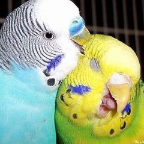
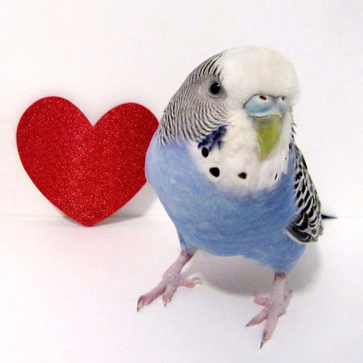

История
Добро пожаловать на страницу истории Союзного клуба. Здесь описаны все ключевые события, конфликты и становление клуба.
ЧАСТЬ 1
Злоштейн говорит: Ну меня можно изобразить как путешественника по клубам. Потом создавший свой клуб, там встретил Героина который просил присоединиться. Но я отказывался и хотел поддержать тот клуб. Потом я не выдержал и пришёл, через некоторое время он мне дал президента и сказал что он уходит. А дальше я изменял правила клуба, он пришёл и потребовал преза, я дал только вице. Потом кто-то написал оскорбления в описании клуба. Началось расследование: я сказал если не найдёте всех понижу, а участников выгоню. Там через некоторое время прихожу, а там некоторые кикнуты, мандарин и персик спасали клуб от кика путём повышения до вице. Они мне сказали что притворились плохими и оказалось что это Героин, там то он начал оправдываться и говорить что его подставили.
ЧАСТЬ 2
Я понизил всех вице, лишь некоторых оставил, иначе бы мне тяжело одному контролировать. Я оправдал это тем, что надо заработать повышение, а не на халяву. Спустя некоторое время он начал придираться к Честеру и меня это бесило, ведь он меня беспокоил (Честер) по поводу Героина, но он тогда не был Героином. Я их кое-как успокоил и правил некоторое время. Принимал идеи, созывал собрания где обсуждали вопросы. Честер предлагал менять президента путём голосования раз в месяц. Я не очень это оценил, ведь я совсем недавно начал правление.
Через некоторое время приходит Героин с такой же идеей и он обманом: дай преза на день, завтра обещаю верну. Ну и этот день он меня то понижал то повышал, да и я устал от правления. Тяжело было. На следующий день я потребовал обратно, но он понизил меня с вице на участника и кикнул. Я создал новый клуб, где особо долго не правил. (У меня был такой шок от его наглости не выполнить обещание).
Клуб стремительно набирал активность и количество человек увеличивалось. Пришла девка какая-то и попросила вице, я дал на том условии, чтобы она нашла помощников и работала. Оказалось что это Героин и он кикнул клуб, сказав что война началась. Хотя я ему ничего не сделал...
ЧАСТЬ 3
Как только он кикнул, меня позвал в клуб какой-то человек, сказал что проблемы. Я пришёл и там я в лобби пришёл к Героину чтобы выяснить причину. Там мы поругались и когда он вышел, то все кто оставались слушали меня. Я объявил о критичном положении и мы начали продумывать план. Мы с твинков следили за его клубом. Честер притворился что он за Героина и доставлял нам информацию: что они делают и кто в нашем клубе его люди. Вроде холдик и смородина ушли в отдельный клуб чтобы спрятаться там, это их клуб был.
Затем я с твинка наблюдал за действиями в клубе и притворялся девочкой мелкой. Интересовался, мол, почему война кто есть кто и вёл себя как можно скрытнее. Затем кто-то из их клуба. Не помню его, он заинтересовался что случилось. Я спросил: ты хочешь знать всю правду? Он согласился и я с основы зашёл и рассказал всё как есть. Затем он начал недовольствовать в клубе и вышел. Не помню, присоединился к нам или нет.
Я сидел в своём клубе и старался помогать всем. Мы потихоньку поднимались и укреплялись. В клубе Героина я продолжал следить. А потом вроде Игрок (если помнишь его). Сообщил что были в клубе, там ещё назревала междоусобица в клубе Героина те кто говорили: Вечер в хату придумал нам занятия, провёл лучик света и весело было, а с Героином мы как в каменном веке. Ну или что-то на подобии этого.
Через некоторое время Я встретился с игроком СССР я старался его переманить к нам, но он меня спалил. После чего пришёл Героин и его дружки с девкой какой-то пришли и он смеясь издевался и кикнул. А они кто смотрел, кто просто интересовался. Девку волновал скриншот где обещание Героина отдать президента. Но так и не смогли связаться с ней.
Спустя некоторое время мне Честер предложил получить вице и я зашёл в клуб под ником Данкер, там я получил вице и хотел кикнуть, я старался собрать 'червей' (твинки друзей и тех кто за меня чтобы повысить и Кикать их клуб). Я поговорил с Честером, но он сказал что не стоит Кикать клуб т. к. у него был какой-то план который он держал в секрете, я согласился чтобы провести массовое изгнание в декабре. Но мой пельмень (племянник) MEGA KNIGHT кикнул немного людей и ушёл, я был рад этому событию.
Но Честер не рассказал про план, по его словам он там один работает чтобы никто не помешал и он нейтралитет старался держать.
Через некоторое время Честер меня сдал и сказал что решил примкнуть к Героину. Я устроил скандал и мы поклялись отомстить. И мы сколько гадостей писали, сколько доводили до слёз. В конце концов мой пельмень вступил в их клуб (естественно изменив профиль чтобы не узнали), встретившись с Честером они начали говорить и так как мой пельмень не знал как правильно написать я ему диктовал слова. Спрашивал: зачем предал вечера ((меня) вечер в хату)? Перекидываться доказательствами, почему Честер не так поступает и про меня тоже говорил. Честер сказал что это я. И я зашёл в лобби, там мы начали вдвоём давить на Честера, он всё кидался своими правдами и говорил что я с Героином как 2 капли воды. Я его обвинял в том что он начал воевать за нас, перешёл на нейтралитет тут я понимал что человек устал и решил не сильно тревожить. Но когда он предал я был в бешенстве. Я с племянником продолжали давить чтобы нанести ему моральный урон. Я говорил ещё: коль начал дело не бросай, а закончи его до конца. Он всё отнекивался что я эгоист, слишком властный и всем от меня плохо. Я сказал: ИСЧЕЗНИ! Он просто кикнул меня из команды и написал в чате команды: исчез. Затем мой племянник написал: сильный не тот кто зол. А силён тот кто силён душой (вроде он так писал, точнее я диктовал).
На следующий день я не выдержал и вновь повоевав с Честером старался остановить войну и заключить мир с Героином. Через некоторое время мы с ним встретились и заключили мир. Оба клуба были счастливы, а мы обсуждали новые планы и шаги развития клубов. Решили ещё и праздник устроить. Правда Игрок требовал вернуть мне президента в клубе Фанатов, но я его успокоил и всё хорошо закончилось.
ЧАСТЬ 4
Через некоторое время мой клан и клан фанатов стали в упадке и я пришёл к персику. Он дал мне вице и через некоторое время отдал мне клан (оказалось ему угрожали, чтобы он перестал быть президентом и он отдал мне, но я об этом узнал лишь месяц назад). Я начал собирать вице и мы создали группу в которой я собрал всех вице, вместе мы развивали клан. Но в один из дней ко мне пришёл героин, он хотел решить проблему с Честером, но я не хотел лишаться своего ценного рабочего и всячески пытался их примирить, чтобы было больше эффективности в клане. Со временем Героин вышел и я остался, но потом у меня случился сбой и я не мог заходить в Нулс из-за какой-то ошибки, долгое время я передавал приказы через других. Но потом я узнал, что Честер пытался перевести людей из моего клуба в другой, якобы я так передал. К счастью я вовремя решил вопрос и вернувшись отчитал его, да и понизив изгнал с клеймом предателя.
...
Героин создал клуб и собирал войска, над нами нависла новая угроза войны, мы приготовились. Но к счастью всё обошлось...
Длиннохвостая синица

Порода: Длиннохвостая синица (ополовник).
Описание: Маленькая пушистая птичка с очень длинным хвостом. Оперение белое, с темными вкраплениями, глаза черные и круглые.
Характер: Очень активные и общительные птицы. Живут стайками, постоянно перекликаются тонкими голосами и не сидят на месте. В стае всегда есть вожак, за которым следуют остальные.
Питание: В основном насекомые и их личинки, которые они находят в кронах деревьев. Зимой могут питаться семенами.
Волнистые попугаи (пара)

Порода: Волнистый попугайчик.
Описание: Небольшие птицы с характерным волнистым рисунком на голове и крыльях. Окрас очень разнообразен — от классического зелёного до голубого, жёлтого и белого.
Поведение: На фото видно, как они проявляют заботу друг о друге. Волнистики — социальные птицы, которые нуждаются в общении. Они часто чистят друг другу пёрышки и кормят клюв в клюв, что является знаком симпатии и привязанности.
Интересный факт: Если волнистику скучно, он может начать выщипывать себе перья. Поэтому им так важно общество сородичей или внимание хозяина.
Голубой волнистый попугай

Порода: Волнистый попугайчик (голубая мутация).
Описание: Элегантный окрас с ярко-голубым брюшком, белой головой и чёрным волнистым рисунком на затылке. Это классическая голубая вариация волнистиков, которая очень популярна среди любителей.
Характер: Эта птичка выглядит очень любознательной. Волнистики легко приручаются, любят играть с зеркальцами и игрушками. Они могут запоминать до нескольких десятков слов и звуков.
Почему сердечко? Волнистые попугаи — одни из самых ласковых домашних птиц. Если они чувствуют заботу, то буквально привязываются к человеку всей душой.